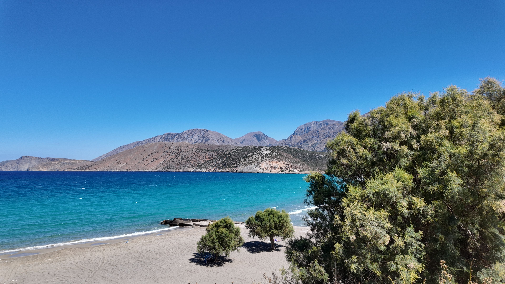
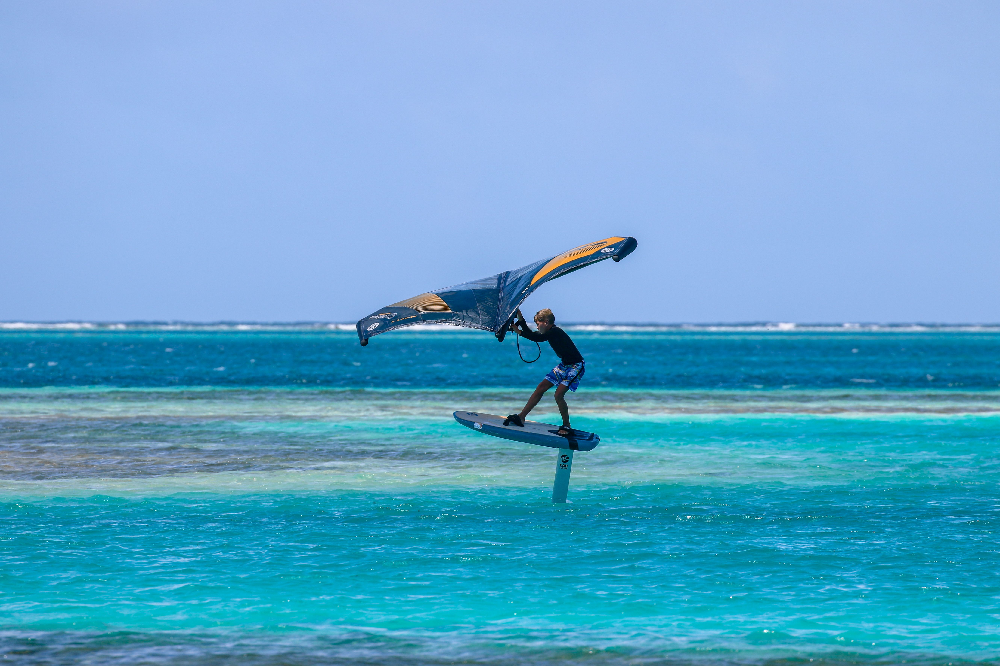

Ανακάλυψε ποιο από τα 24 κατοικημένα νησιά ταιριάζει απόλυτα στο δικό σου στυλ διακοπών μέσα από ένα έξυπνο κουίζ 9 ερωτήσεων.
Ξεκίνα το Κουίζ 🚢3 απλά βήματα για να βρεις τον επόμενο προορισμό σου στο Αιγαίο
9 στοχευμένες ερωτήσεις για το budget, την παρέα, τις παραλίες και τις μετακινήσεις σου.
Το σύστημά μας μοιράζει πόντους και υπολογίζει ποιο νησί ταιριάζει καλύτερα στις προτιμήσεις σου.
Λάβε άμεσα το αποτέλεσμα μαζί με έναν πλήρη, δυναμικό ταξιδιωτικό οδηγό για το νησί σου.
Επίλεξε αυτό που σε εμπνέει περισσότερο και ανακάλυψε τους κορυφαίους προορισμούς

Ανακάλυψε τις πιο εξωτικές, σεληνιακές και κρυμμένες αμμουδιές των Κυκλάδων.

Οι κορυφαίοι προορισμοί για windsurf, kitesurf και εξερεύνηση μαγικών βυθών.
Περπάτησε σε πιστοποιημένες αρχαίες διαδρομές, άγρια φύση και μεσαιωνικά κάστρα.
Δοκίμασε τα νέα διαδραστικά εργαλεία μας και σχεδίασε το καλοκαίρι σου
Πόσο καλά γνωρίζεις το Αιγαίο; Τέσταρε τις γνώσεις σου στο μεγάλο κουίζ 10 απαιτητικών ερωτήσεων!
Παίξε το TriviaΣχεδίασε το δικό σου custom δρομολόγιο, επίλεξε διανυκτερεύσεις και μάζεψε τις καλύτερες παραλίες!
Φτιάξε ΔρομολόγιοΜαγικές Παραλίες κρύβει η Σέριφος, ένας απίστευτος αριθμός για το μέγεθός της!
Ετών ιστορίας κουβαλά ο προϊστορικός οικισμός του Σκάρκου στην Ίο.
Αυτοκίνητα κυκλοφορούν στα Κουφονήσια. Εκεί περπατάς παντού ξυπόλητος!
Κάνε κλικ στο όνομα του νησιού για να δεις τον οδηγό του! 🚢